The center and plotting direction are fixed at the parent checkpoint. All runs use IID subsets, original parent learning rate, and the full 8192-example training subset. Curvature matrices in the alignment panel use that same subset. Histograms use four declared 512-update intervals and 30 bins without selecting intervals by modality. The short trace uses updates2048–2111. Gain ladders use fresh minibatches at each plotted state: fixed-axis compression versus batch-gradient compression, each summarized by H,G,A1,A2. No propagated-tangent panel and no static ladder panels are included. Sparse even-update conditional probes do not average over oscillation phases; they do not establish stationarity or a full-network Lyapunov exponent. Alignment is measured, not assumed, and Ritz extremality is not certified. The original anchor uses128 fresh draws at zero and24 at subsequent even states512k.
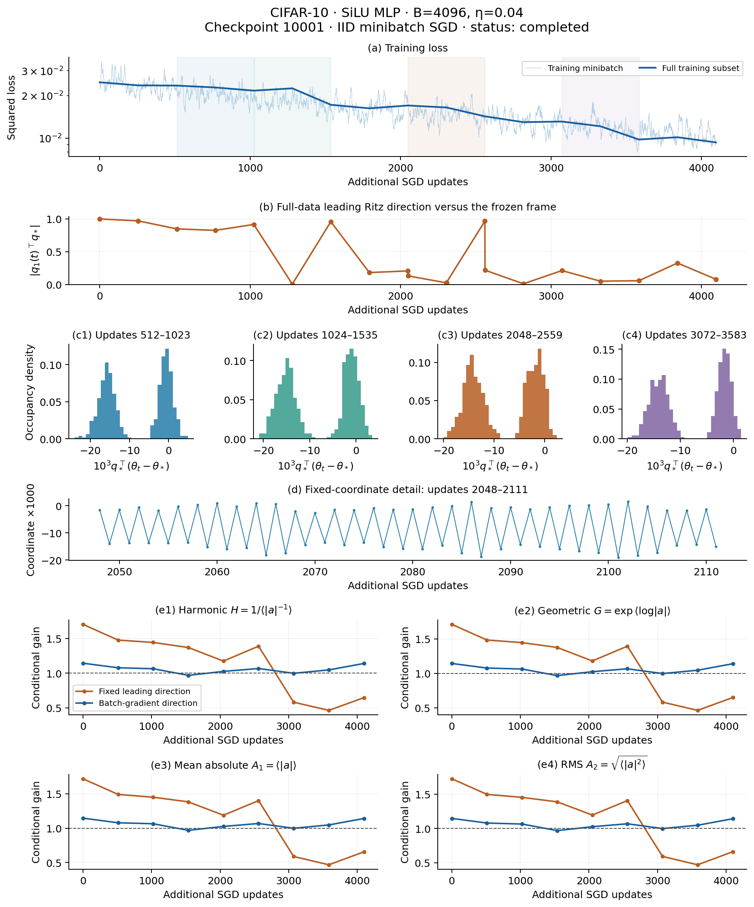
Fresh conditional minibatch probes at each displayed fixed state, using the same draws across directions. There are 128 draws at update zero and 24 at other displayed states. Only states at multiples of 512 are displayed here; the adjacent phase appears in Figure 3. The batch-gradient direction changes with the sampled batch. All other directions are checkpoint-fixed. Geometric gain G=exp(Lambda) shares the unit reference with H, A1 and A2. Finite H does not establish a finite population inverse moment.
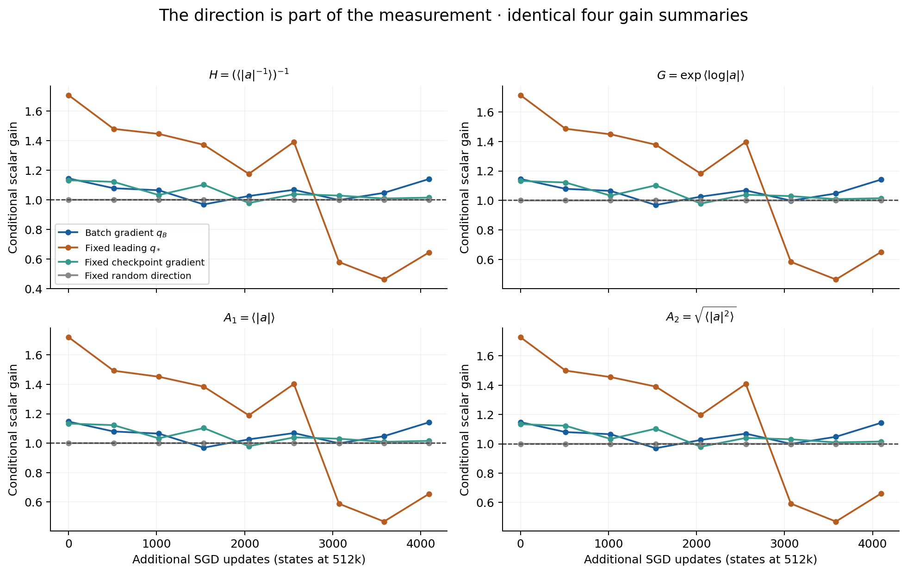
Fixed leading-axis scalar gains: 24 identical fresh minibatches reused across the two states of each adjacent pair. All four measures are computed separately by phase. These are conditional one-step compression statistics, not the two-step product exponent.
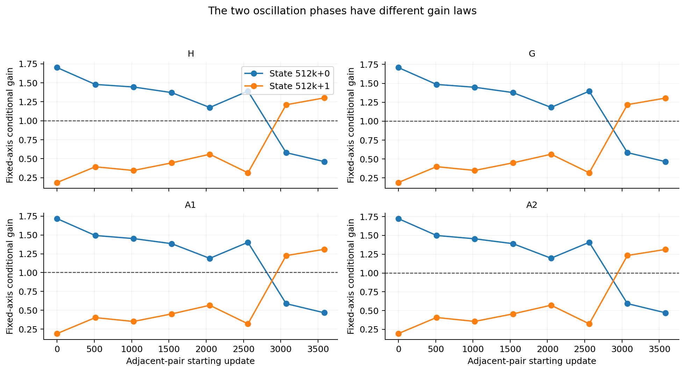
Batch-gradient scalar gains at update 20000 and matched training/probe batch size. Curves average within-run CDFs or log moments equally across available runs; this is not the log moment of pooled gains. No separate seed panels. Architecture-specific step sizes are labeled; this is not a controlled comparison changing architecture alone. Only measured final-checkpoint cases are shown; the full grids retain earlier/pre-escape observations. Positive and negative moments summarize gain distributions, not parameter-coordinate histograms.
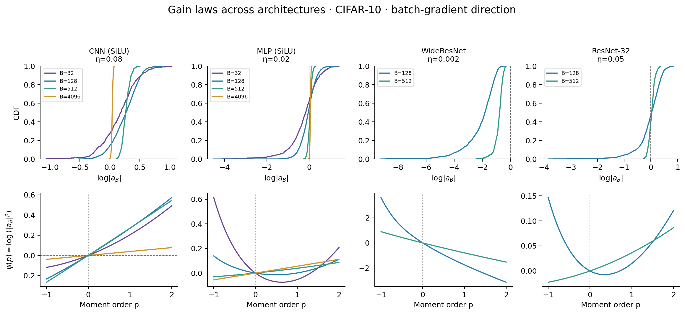
eta=0.04: step 10,000; eta=0.08: step 10,000; eta=0.16: step 10,000. Curves show average run-level measurements. The Hessian curve is a finite power-iteration estimate; it is not a certified largest eigenvalue. Actual saved learning rates are used. A red cross retains a pre-escape checkpoint.
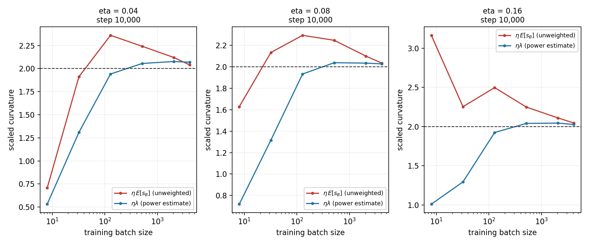
eta=0.04: step 10,000; eta=0.08: step 10,000; eta=0.16: step 10,000. Curves show average run-level measurements. H=1/E[1/|a|], G=exp(Lambda), A1=E|a|, A2=sqrt(E|a|^2). The lower panel uses a logarithmic scale. A mean of run-level H estimates is not H of a pooled distribution; finite estimates do not prove inverse-moment existence.
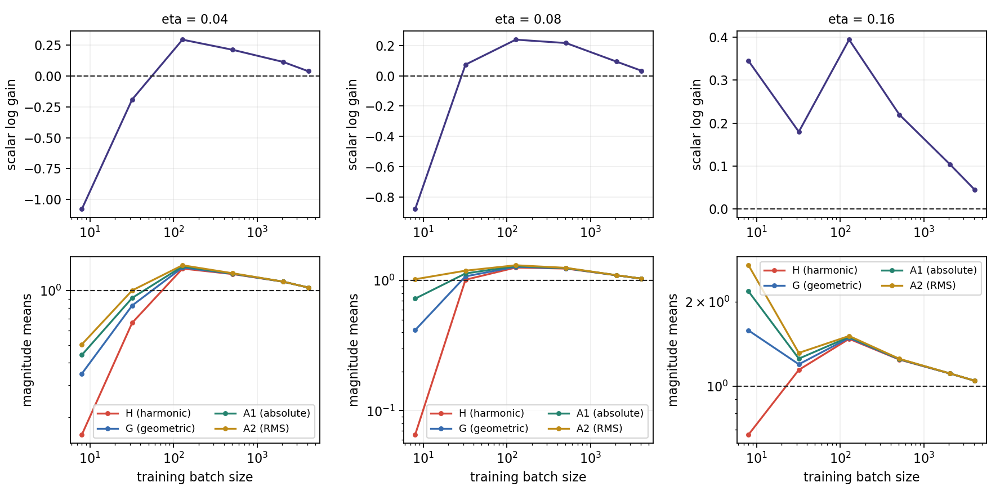
eta=0.04: step 10,000; eta=0.08: step 10,000; eta=0.16: step 10,000. Curves show average run-level measurements. CDFs and log moments are computed within each run, then averaged equally. These are distributions of a conditional scalar multiplier, not distributions of a fixed parameter coordinate. Values near a=0 dominate inverse moments; p=0 is exactly zero by definition.
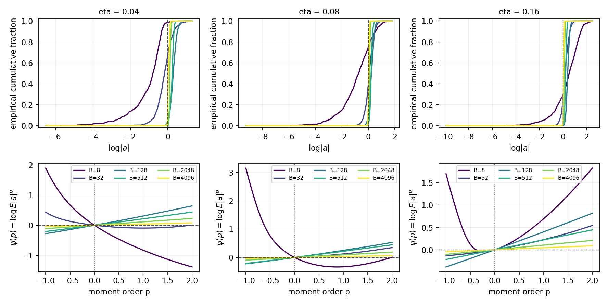
Each batch curve averages run-level measurements at shared checkpoints and stops at the last common measurement. Loss and gain panels use their own recorded sampling grids. Finite training prefixes and decreasing loss do not establish a stationary distribution.
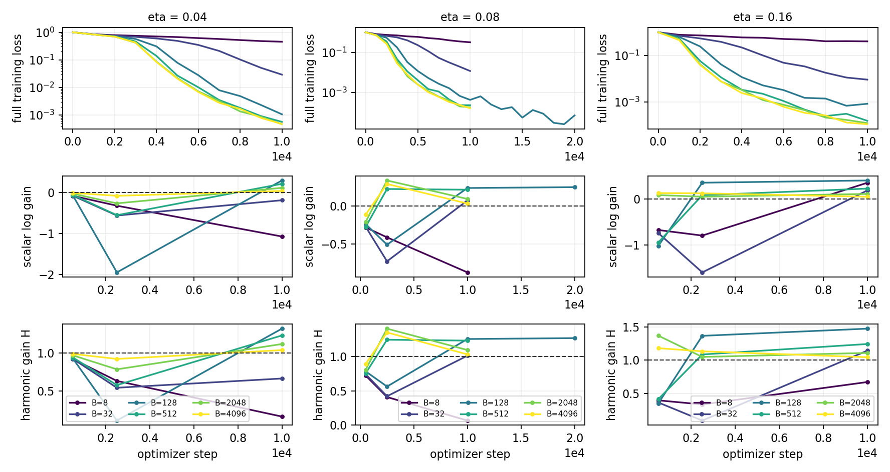
eta=0.01: step 10,000; eta=0.02: step 10,000; eta=0.04: step 10,000. Curves show average run-level measurements. The Hessian curve is a finite power-iteration estimate; it is not a certified largest eigenvalue. Actual saved learning rates are used. A red cross retains a pre-escape checkpoint.
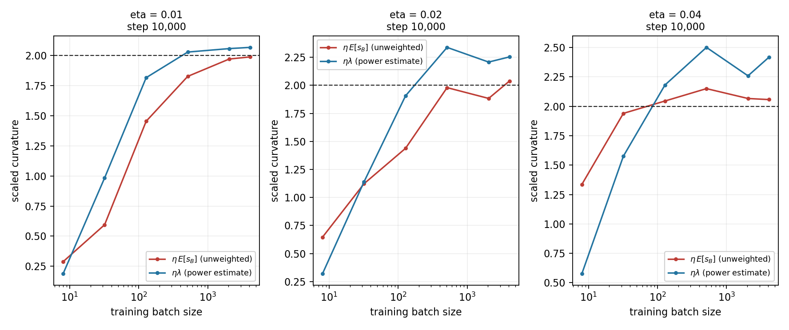
eta=0.01: step 10,000; eta=0.02: step 10,000; eta=0.04: step 10,000. Curves show average run-level measurements. H=1/E[1/|a|], G=exp(Lambda), A1=E|a|, A2=sqrt(E|a|^2). The lower panel uses a logarithmic scale. A mean of run-level H estimates is not H of a pooled distribution; finite estimates do not prove inverse-moment existence.
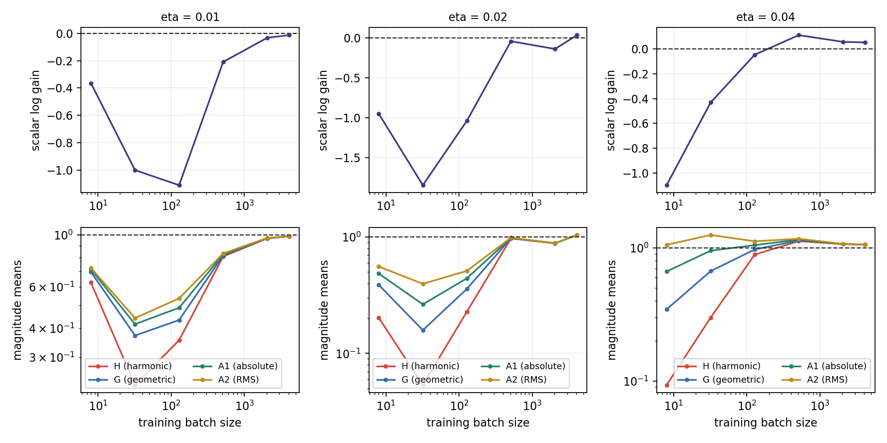
eta=0.01: step 10,000; eta=0.02: step 10,000; eta=0.04: step 10,000. Curves show average run-level measurements. CDFs and log moments are computed within each run, then averaged equally. These are distributions of a conditional scalar multiplier, not distributions of a fixed parameter coordinate. Values near a=0 dominate inverse moments; p=0 is exactly zero by definition.
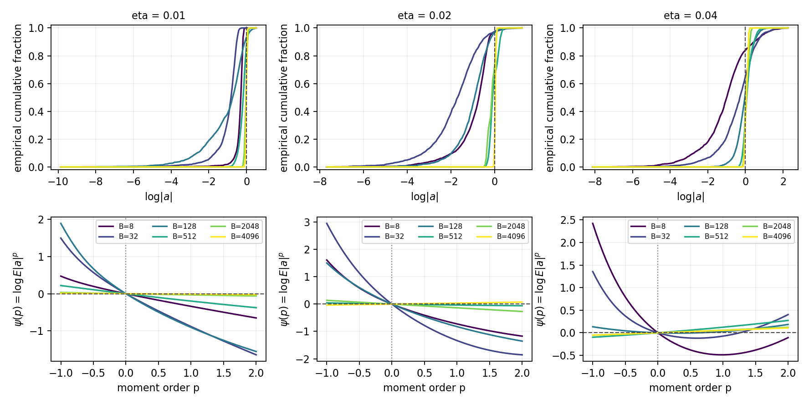
Each batch curve averages run-level measurements at shared checkpoints and stops at the last common measurement. Loss and gain panels use their own recorded sampling grids. Finite training prefixes and decreasing loss do not establish a stationary distribution.
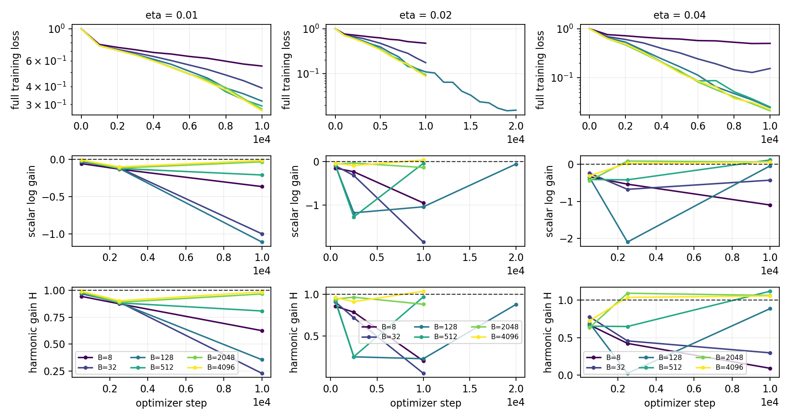
eta=0.001: step 2,500; eta=0.002: step 2,500; eta=0.004: step 2,500. Curves show average run-level measurements. The Hessian curve is a finite power-iteration estimate; it is not a certified largest eigenvalue. Actual saved learning rates are used. A red cross retains a pre-escape checkpoint.
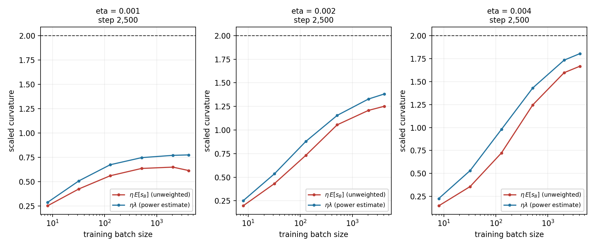
eta=0.001: step 2,500; eta=0.002: step 2,500; eta=0.004: step 2,500. Curves show average run-level measurements. H=1/E[1/|a|], G=exp(Lambda), A1=E|a|, A2=sqrt(E|a|^2). The lower panel uses a logarithmic scale. A mean of run-level H estimates is not H of a pooled distribution; finite estimates do not prove inverse-moment existence.
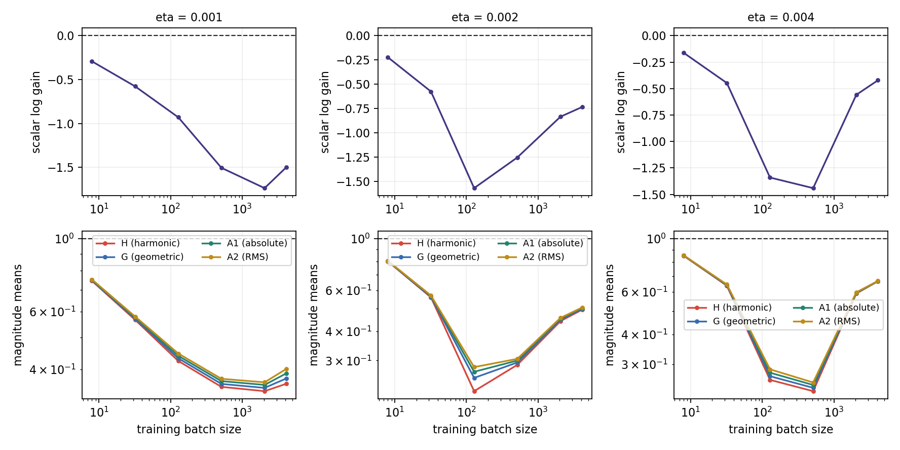
eta=0.001: step 2,500; eta=0.002: step 2,500; eta=0.004: step 2,500. Curves show average run-level measurements. CDFs and log moments are computed within each run, then averaged equally. These are distributions of a conditional scalar multiplier, not distributions of a fixed parameter coordinate. Values near a=0 dominate inverse moments; p=0 is exactly zero by definition.
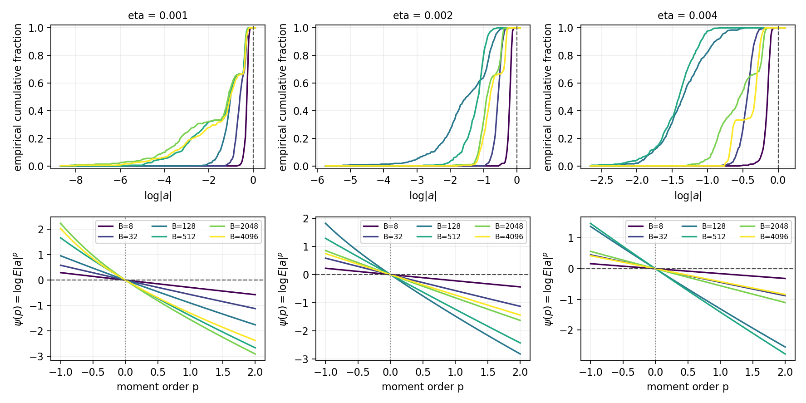
Each batch curve averages run-level measurements at shared checkpoints and stops at the last common measurement. Loss and gain panels use their own recorded sampling grids. Finite training prefixes and decreasing loss do not establish a stationary distribution.
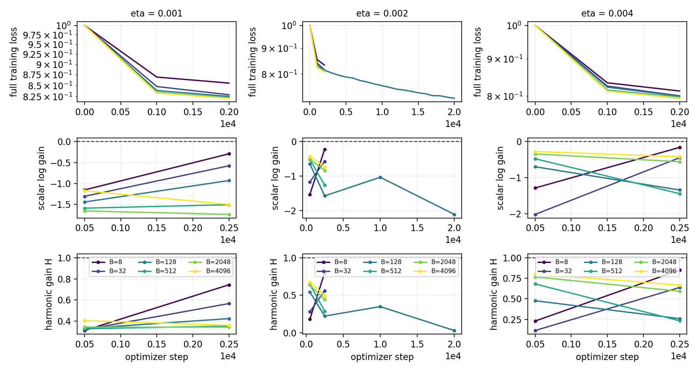
eta=0.025: step 2,500; eta=0.05: step 2,500; eta=0.1: step 2,500. Curves show average run-level measurements. The Hessian curve is a finite power-iteration estimate; it is not a certified largest eigenvalue. Actual saved learning rates are used. A red cross retains a pre-escape checkpoint.
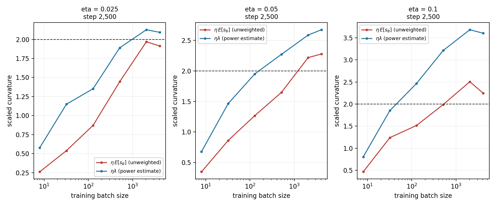
eta=0.025: step 2,500; eta=0.05: step 2,500; eta=0.1: step 2,500. Curves show average run-level measurements. H=1/E[1/|a|], G=exp(Lambda), A1=E|a|, A2=sqrt(E|a|^2). The lower panel uses a logarithmic scale. A mean of run-level H estimates is not H of a pooled distribution; finite estimates do not prove inverse-moment existence.
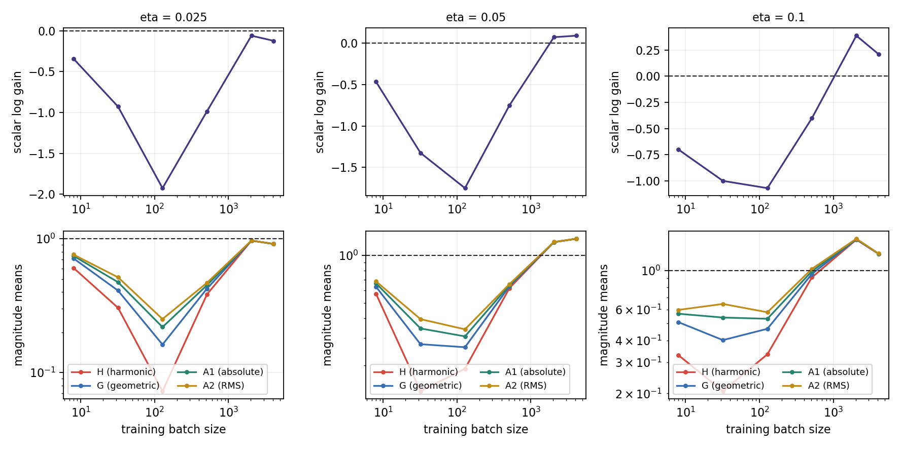
eta=0.025: step 2,500; eta=0.05: step 2,500; eta=0.1: step 2,500. Curves show average run-level measurements. CDFs and log moments are computed within each run, then averaged equally. These are distributions of a conditional scalar multiplier, not distributions of a fixed parameter coordinate. Values near a=0 dominate inverse moments; p=0 is exactly zero by definition.
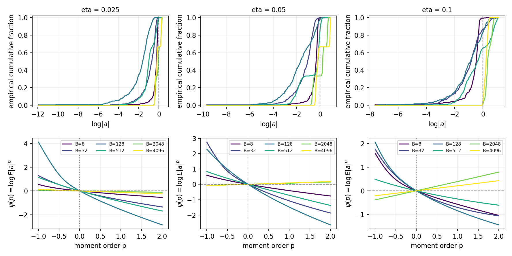
Each batch curve averages run-level measurements at shared checkpoints and stops at the last common measurement. Loss and gain panels use their own recorded sampling grids. Finite training prefixes and decreasing loss do not establish a stationary distribution.
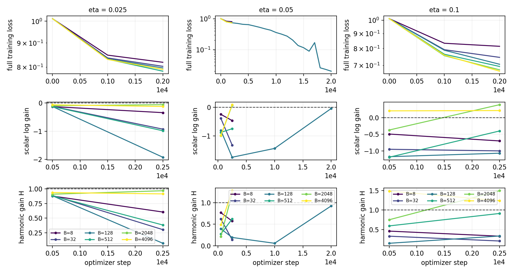
eta=0.04: step 19,999; eta=0.08: step 19,999. Curves show average run-level measurements. The Hessian curve is a finite power-iteration estimate; it is not a certified largest eigenvalue. Actual saved learning rates are used. A red cross retains a pre-escape checkpoint.
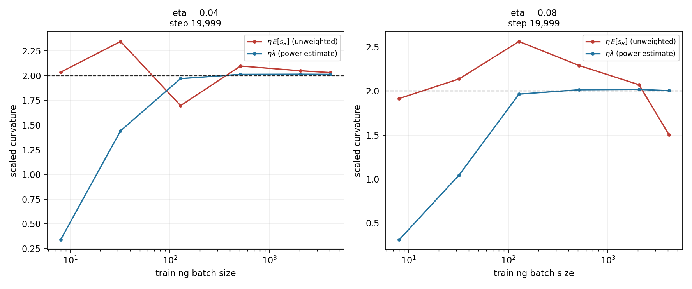
eta=0.04: step 19,999; eta=0.08: step 19,999. Curves show average run-level measurements. H=1/E[1/|a|], G=exp(Lambda), A1=E|a|, A2=sqrt(E|a|^2). The lower panel uses a logarithmic scale. A mean of run-level H estimates is not H of a pooled distribution; finite estimates do not prove inverse-moment existence.
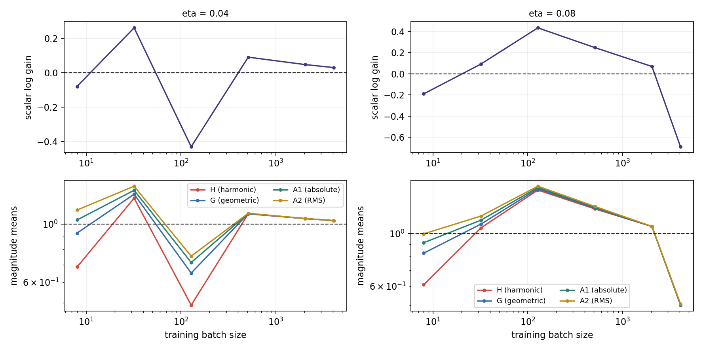
eta=0.04: step 19,999; eta=0.08: step 19,999. Curves show average run-level measurements. CDFs and log moments are computed within each run, then averaged equally. These are distributions of a conditional scalar multiplier, not distributions of a fixed parameter coordinate. Values near a=0 dominate inverse moments; p=0 is exactly zero by definition.
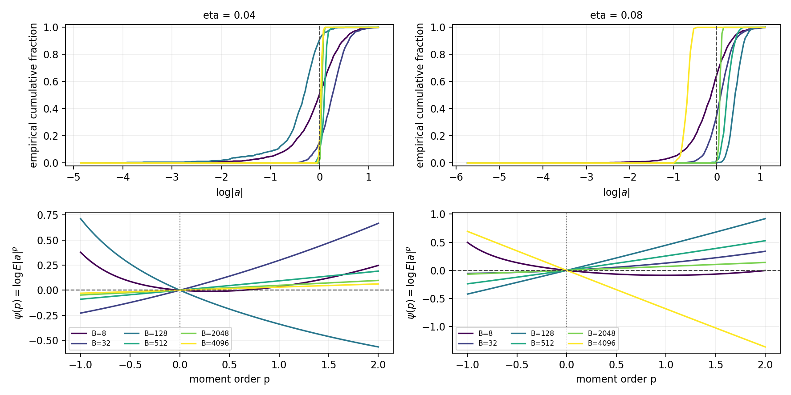
Each batch curve averages run-level measurements at shared checkpoints and stops at the last common measurement. Loss and gain panels use their own recorded sampling grids. Finite training prefixes and decreasing loss do not establish a stationary distribution.
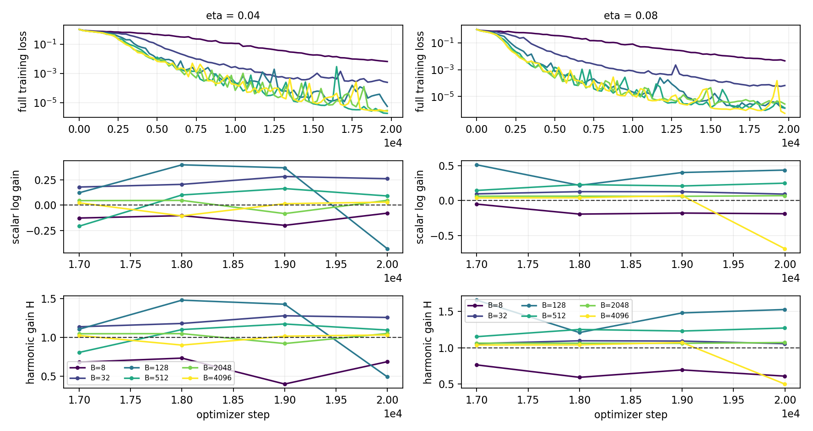
eta=0.01: step 39,999. Curves show average run-level measurements. The Hessian curve is a finite power-iteration estimate; it is not a certified largest eigenvalue. Actual saved learning rates are used. A red cross retains a pre-escape checkpoint.
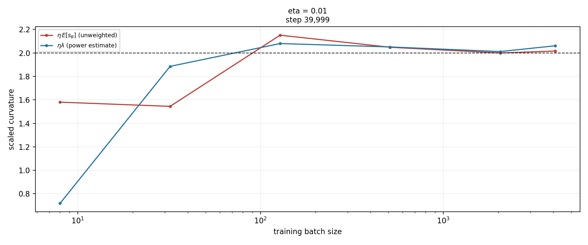
eta=0.01: step 39,999. Curves show average run-level measurements. H=1/E[1/|a|], G=exp(Lambda), A1=E|a|, A2=sqrt(E|a|^2). The lower panel uses a logarithmic scale. A mean of run-level H estimates is not H of a pooled distribution; finite estimates do not prove inverse-moment existence.
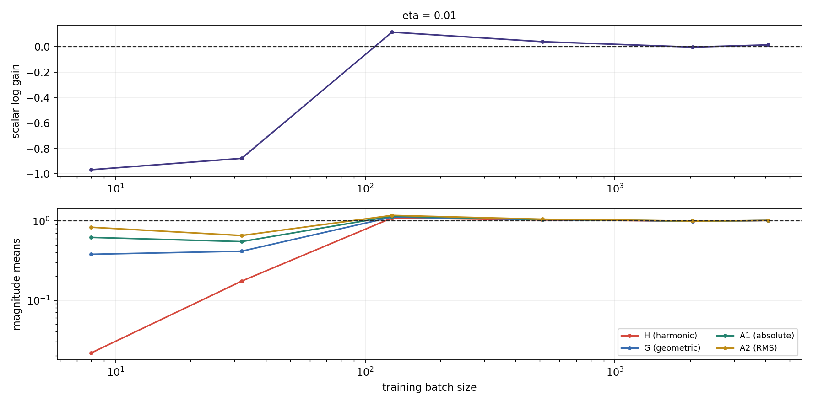
eta=0.01: step 39,999. Curves show average run-level measurements. CDFs and log moments are computed within each run, then averaged equally. These are distributions of a conditional scalar multiplier, not distributions of a fixed parameter coordinate. Values near a=0 dominate inverse moments; p=0 is exactly zero by definition.
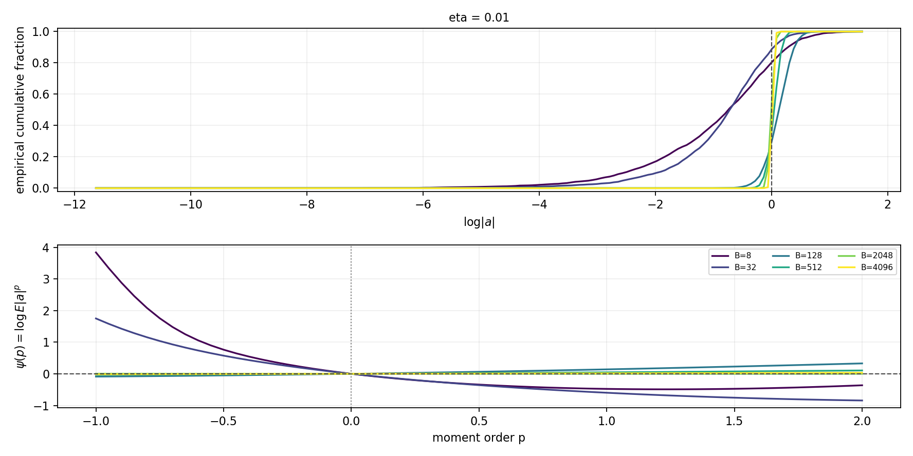
Each batch curve averages run-level measurements at shared checkpoints and stops at the last common measurement. Loss and gain panels use their own recorded sampling grids. Finite training prefixes and decreasing loss do not establish a stationary distribution.
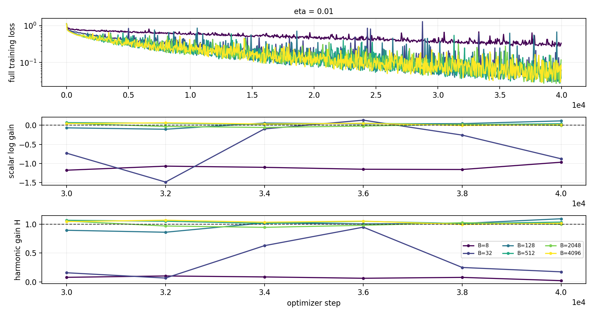
eta=0.005: step 39,999. Curves show average run-level measurements. The Hessian curve is a finite power-iteration estimate; it is not a certified largest eigenvalue. Actual saved learning rates are used. A red cross retains a pre-escape checkpoint.
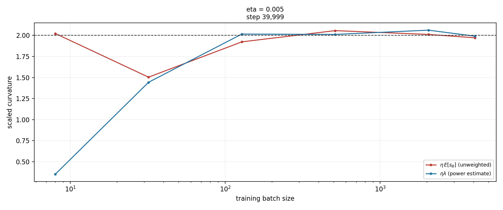
eta=0.005: step 39,999. Curves show average run-level measurements. H=1/E[1/|a|], G=exp(Lambda), A1=E|a|, A2=sqrt(E|a|^2). The lower panel uses a logarithmic scale. A mean of run-level H estimates is not H of a pooled distribution; finite estimates do not prove inverse-moment existence.
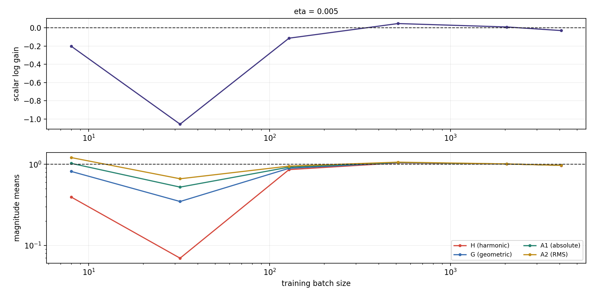
eta=0.005: step 39,999. Curves show average run-level measurements. CDFs and log moments are computed within each run, then averaged equally. These are distributions of a conditional scalar multiplier, not distributions of a fixed parameter coordinate. Values near a=0 dominate inverse moments; p=0 is exactly zero by definition.
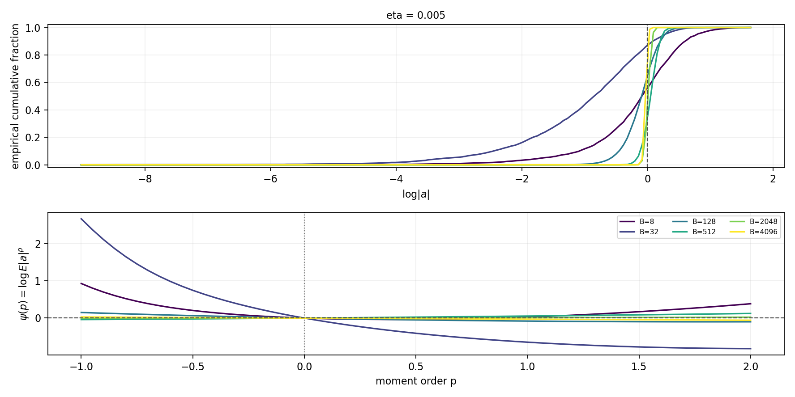
Each batch curve averages run-level measurements at shared checkpoints and stops at the last common measurement. Loss and gain panels use their own recorded sampling grids. Finite training prefixes and decreasing loss do not establish a stationary distribution.
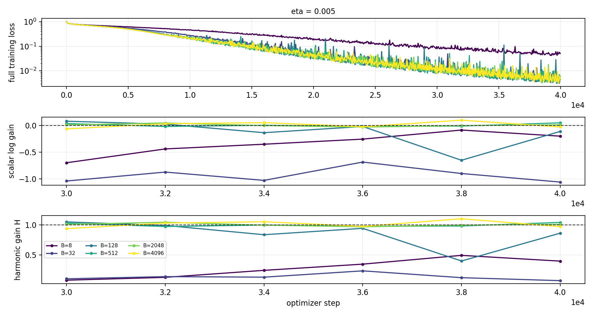
eta=0.01: step 39,999. Curves show average run-level measurements. The Hessian curve is a finite power-iteration estimate; it is not a certified largest eigenvalue. Actual saved learning rates are used. A red cross retains a pre-escape checkpoint.
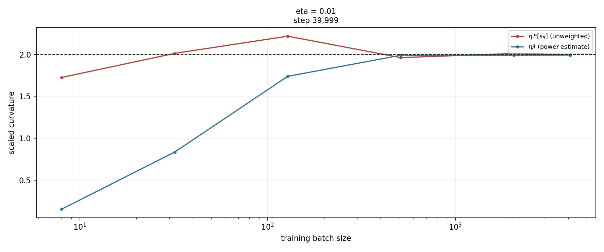
eta=0.01: step 39,999. Curves show average run-level measurements. H=1/E[1/|a|], G=exp(Lambda), A1=E|a|, A2=sqrt(E|a|^2). The lower panel uses a logarithmic scale. A mean of run-level H estimates is not H of a pooled distribution; finite estimates do not prove inverse-moment existence.
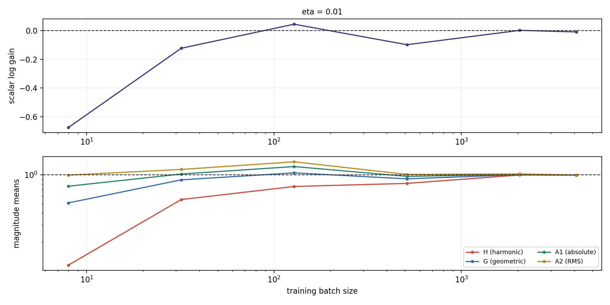
eta=0.01: step 39,999. Curves show average run-level measurements. CDFs and log moments are computed within each run, then averaged equally. These are distributions of a conditional scalar multiplier, not distributions of a fixed parameter coordinate. Values near a=0 dominate inverse moments; p=0 is exactly zero by definition.
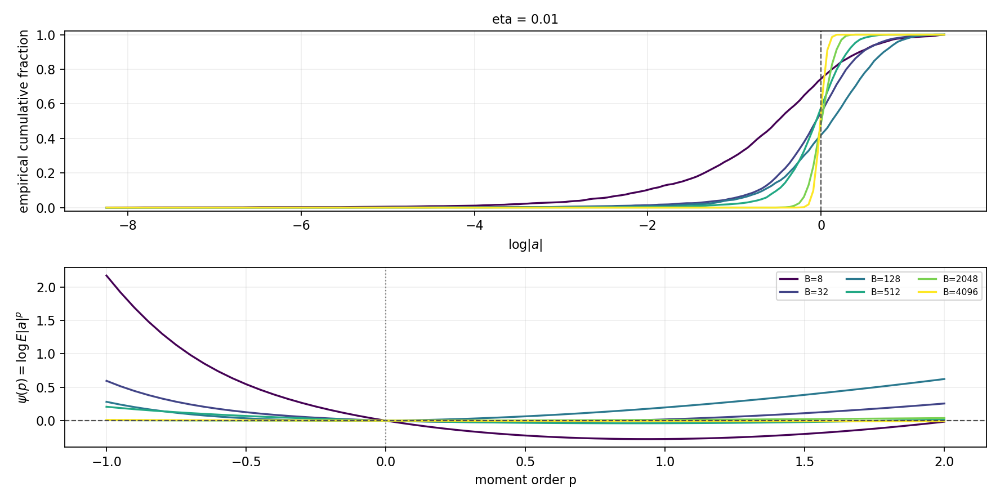
Each batch curve averages run-level measurements at shared checkpoints and stops at the last common measurement. Loss and gain panels use their own recorded sampling grids. Finite training prefixes and decreasing loss do not establish a stationary distribution.
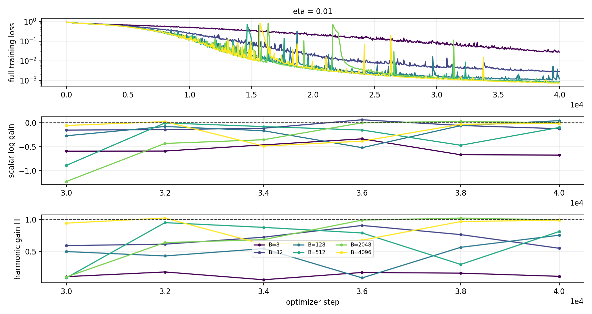
eta=0.01: step 39,999. Curves show average run-level measurements. The Hessian curve is a finite power-iteration estimate; it is not a certified largest eigenvalue. Actual saved learning rates are used. A red cross retains a pre-escape checkpoint.
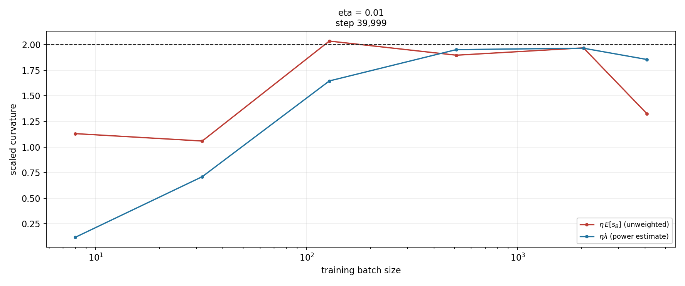
eta=0.01: step 39,999. Curves show average run-level measurements. H=1/E[1/|a|], G=exp(Lambda), A1=E|a|, A2=sqrt(E|a|^2). The lower panel uses a logarithmic scale. A mean of run-level H estimates is not H of a pooled distribution; finite estimates do not prove inverse-moment existence.
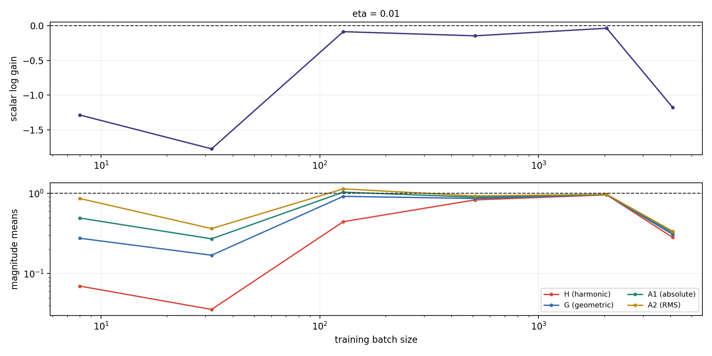
eta=0.01: step 39,999. Curves show average run-level measurements. CDFs and log moments are computed within each run, then averaged equally. These are distributions of a conditional scalar multiplier, not distributions of a fixed parameter coordinate. Values near a=0 dominate inverse moments; p=0 is exactly zero by definition.
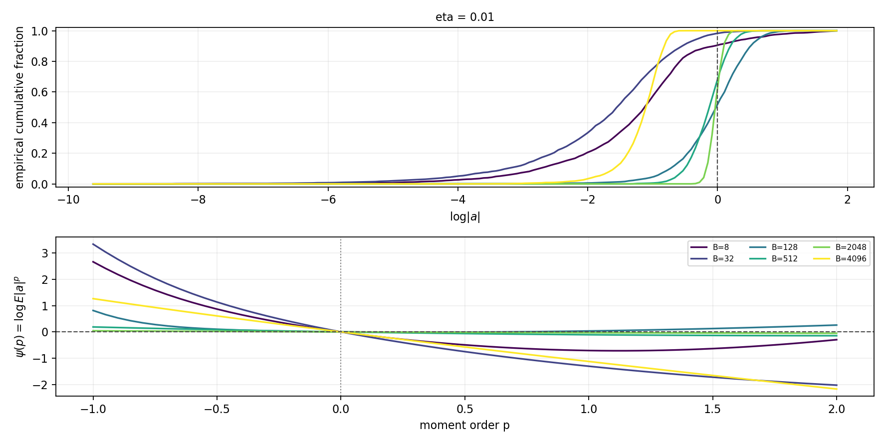
Each batch curve averages run-level measurements at shared checkpoints and stops at the last common measurement. Loss and gain panels use their own recorded sampling grids. Finite training prefixes and decreasing loss do not establish a stationary distribution.
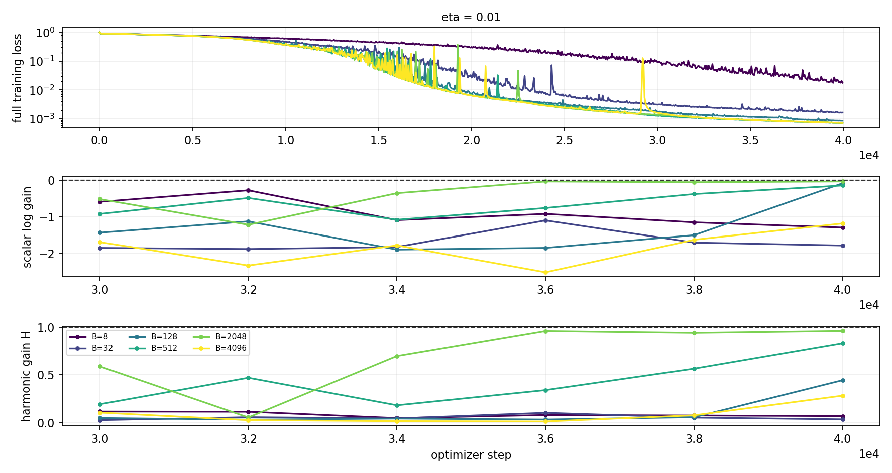
eta=0.005: step 39,999; eta=0.01: step 39,999; eta=0.02: step 39,999. Curves show average run-level measurements. The Hessian curve is a finite power-iteration estimate; it is not a certified largest eigenvalue. Actual saved learning rates are used. A red cross retains a pre-escape checkpoint.
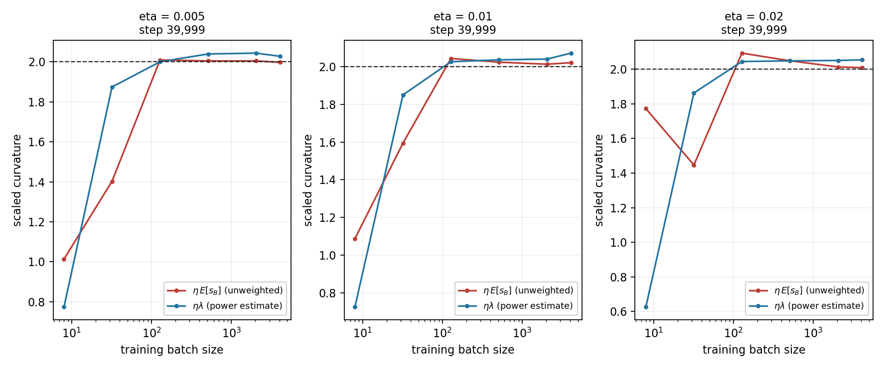
eta=0.005: step 39,999; eta=0.01: step 39,999; eta=0.02: step 39,999. Curves show average run-level measurements. H=1/E[1/|a|], G=exp(Lambda), A1=E|a|, A2=sqrt(E|a|^2). The lower panel uses a logarithmic scale. A mean of run-level H estimates is not H of a pooled distribution; finite estimates do not prove inverse-moment existence.
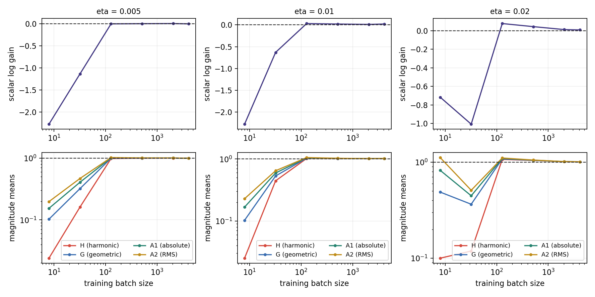
eta=0.005: step 39,999; eta=0.01: step 39,999; eta=0.02: step 39,999. Curves show average run-level measurements. CDFs and log moments are computed within each run, then averaged equally. These are distributions of a conditional scalar multiplier, not distributions of a fixed parameter coordinate. Values near a=0 dominate inverse moments; p=0 is exactly zero by definition.
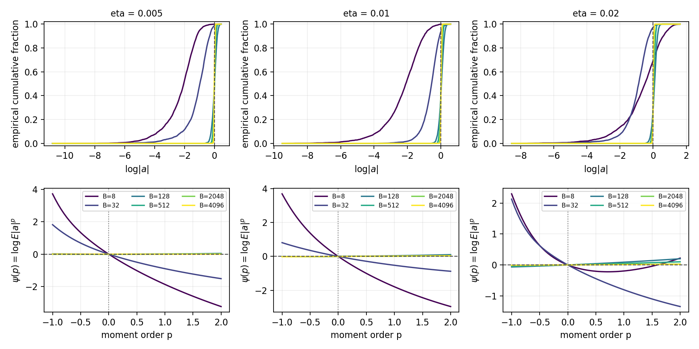
Each batch curve averages run-level measurements at shared checkpoints and stops at the last common measurement. Loss and gain panels use their own recorded sampling grids. Finite training prefixes and decreasing loss do not establish a stationary distribution.
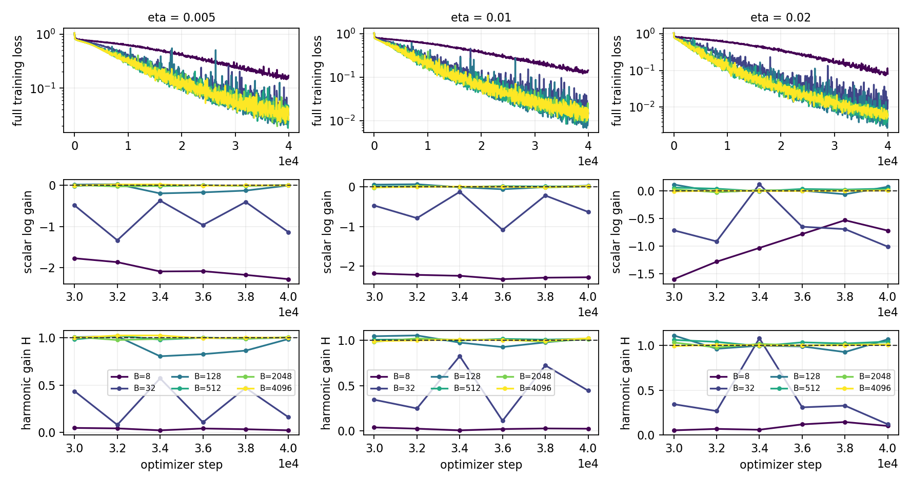
eta=0.025: step 14,999; eta=0.05: step 14,999. Curves show average run-level measurements. The Hessian curve is a finite power-iteration estimate; it is not a certified largest eigenvalue. Actual saved learning rates are used. A red cross retains a pre-escape checkpoint.
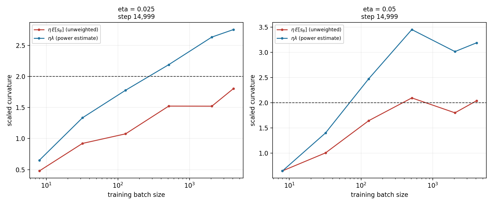
eta=0.025: step 14,999; eta=0.05: step 14,999. Curves show average run-level measurements. H=1/E[1/|a|], G=exp(Lambda), A1=E|a|, A2=sqrt(E|a|^2). The lower panel uses a logarithmic scale. A mean of run-level H estimates is not H of a pooled distribution; finite estimates do not prove inverse-moment existence.
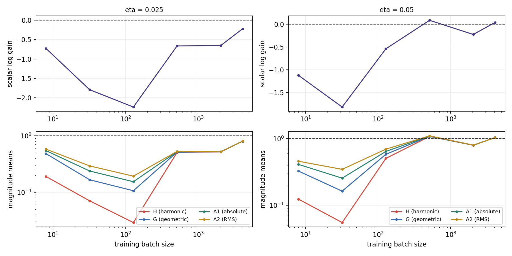
eta=0.025: step 14,999; eta=0.05: step 14,999. Curves show average run-level measurements. CDFs and log moments are computed within each run, then averaged equally. These are distributions of a conditional scalar multiplier, not distributions of a fixed parameter coordinate. Values near a=0 dominate inverse moments; p=0 is exactly zero by definition.
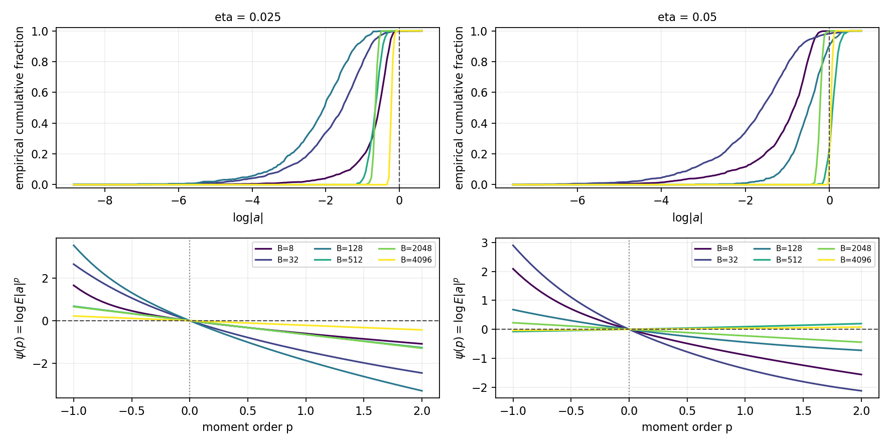
Each batch curve averages run-level measurements at shared checkpoints and stops at the last common measurement. Loss and gain panels use their own recorded sampling grids. Finite training prefixes and decreasing loss do not establish a stationary distribution.
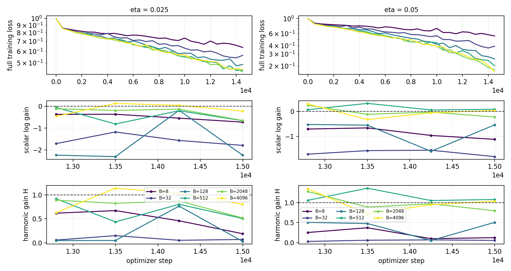
eta=0.2: steps 400-19,999. Curves show average run-level measurements. The Hessian curve is a finite power-iteration estimate; it is not a certified largest eigenvalue. Actual saved learning rates are used. A red cross retains a pre-escape checkpoint.
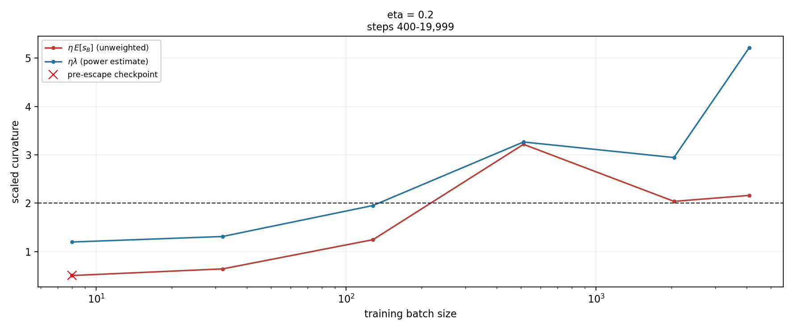
eta=0.2: steps 400-19,999. Curves show average run-level measurements. H=1/E[1/|a|], G=exp(Lambda), A1=E|a|, A2=sqrt(E|a|^2). The lower panel uses a logarithmic scale. A mean of run-level H estimates is not H of a pooled distribution; finite estimates do not prove inverse-moment existence.
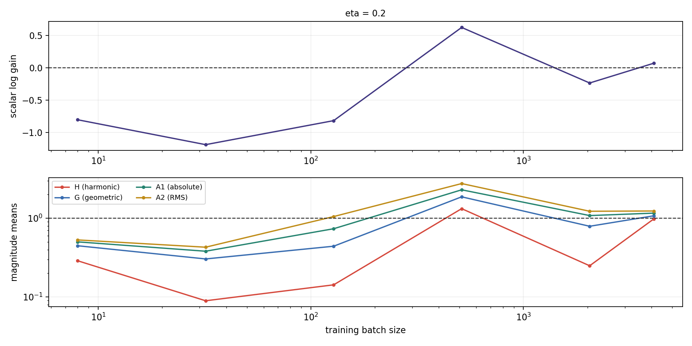
eta=0.2: steps 400-19,999. Curves show average run-level measurements. CDFs and log moments are computed within each run, then averaged equally. These are distributions of a conditional scalar multiplier, not distributions of a fixed parameter coordinate. Values near a=0 dominate inverse moments; p=0 is exactly zero by definition.
Each batch curve averages run-level measurements at shared checkpoints and stops at the last common measurement. Loss and gain panels use their own recorded sampling grids. Finite training prefixes and decreasing loss do not establish a stationary distribution.
Axes are actual training learning rate and batch size. The six panels show Lambda, H, A1, A2, eta E[s_B], and the fraction of expanding gains. Each cell averages run-level statistics from the final three available checkpoints; time windows can differ across settings and runs. Color centers are 0, 1, 1, 1, 2, and 0.5. Curvature and expansion-fraction centers are references, not full-network stability tests. A trailing +/- preserves the side of a reference after rounding. Gray means no gain estimate; E marks a recorded escape, including pre-escape estimates. Finite H does not establish population inverse-moment finiteness.
Axes are actual training learning rate and batch size. The six panels show Lambda, H, A1, A2, eta E[s_B], and the fraction of expanding gains. Each cell averages run-level statistics from the final three available checkpoints; time windows can differ across settings and runs. Color centers are 0, 1, 1, 1, 2, and 0.5. Curvature and expansion-fraction centers are references, not full-network stability tests. A trailing +/- preserves the side of a reference after rounding. Gray means no gain estimate; E marks a recorded escape, including pre-escape estimates. Finite H does not establish population inverse-moment finiteness.
Axes are actual training learning rate and batch size. The six panels show Lambda, H, A1, A2, eta E[s_B], and the fraction of expanding gains. Each cell averages run-level statistics from the final three available checkpoints; time windows can differ across settings and runs. Color centers are 0, 1, 1, 1, 2, and 0.5. Curvature and expansion-fraction centers are references, not full-network stability tests. A trailing +/- preserves the side of a reference after rounding. Gray means no gain estimate; E marks a recorded escape, including pre-escape estimates. Finite H does not establish population inverse-moment finiteness.
Axes are actual training learning rate and batch size. The six panels show Lambda, H, A1, A2, eta E[s_B], and the fraction of expanding gains. Each cell averages run-level statistics from the final three available checkpoints; time windows can differ across settings and runs. Color centers are 0, 1, 1, 1, 2, and 0.5. Curvature and expansion-fraction centers are references, not full-network stability tests. A trailing +/- preserves the side of a reference after rounding. Gray means no gain estimate; E marks a recorded escape, including pre-escape estimates. Finite H does not establish population inverse-moment finiteness.
Axes are actual training learning rate and batch size. The six panels show Lambda, H, A1, A2, eta E[s_B], and the fraction of expanding gains. Each cell averages run-level statistics from the final three available checkpoints; time windows can differ across settings and runs. Color centers are 0, 1, 1, 1, 2, and 0.5. Curvature and expansion-fraction centers are references, not full-network stability tests. A trailing +/- preserves the side of a reference after rounding. Gray means no gain estimate; E marks a recorded escape, including pre-escape estimates. Finite H does not establish population inverse-moment finiteness.
Axes are actual training learning rate and batch size. The six panels show Lambda, H, A1, A2, eta E[s_B], and the fraction of expanding gains. Each cell averages run-level statistics from the final three available checkpoints; time windows can differ across settings and runs. Color centers are 0, 1, 1, 1, 2, and 0.5. Curvature and expansion-fraction centers are references, not full-network stability tests. A trailing +/- preserves the side of a reference after rounding. Gray means no gain estimate; E marks a recorded escape, including pre-escape estimates. Finite H does not establish population inverse-moment finiteness.
Axes are actual training learning rate and batch size. The six panels show Lambda, H, A1, A2, eta E[s_B], and the fraction of expanding gains. Each cell averages run-level statistics from the final three available checkpoints; time windows can differ across settings and runs. Color centers are 0, 1, 1, 1, 2, and 0.5. Curvature and expansion-fraction centers are references, not full-network stability tests. A trailing +/- preserves the side of a reference after rounding. Gray means no gain estimate; E marks a recorded escape, including pre-escape estimates. Finite H does not establish population inverse-moment finiteness.
Axes are actual training learning rate and batch size. The six panels show Lambda, H, A1, A2, eta E[s_B], and the fraction of expanding gains. Each cell averages run-level statistics from the final three available checkpoints; time windows can differ across settings and runs. Color centers are 0, 1, 1, 1, 2, and 0.5. Curvature and expansion-fraction centers are references, not full-network stability tests. A trailing +/- preserves the side of a reference after rounding. Gray means no gain estimate; E marks a recorded escape, including pre-escape estimates. Finite H does not establish population inverse-moment finiteness.
Axes are actual training learning rate and batch size. The six panels show Lambda, H, A1, A2, eta E[s_B], and the fraction of expanding gains. Each cell averages run-level statistics from the final three available checkpoints; time windows can differ across settings and runs. Color centers are 0, 1, 1, 1, 2, and 0.5. Curvature and expansion-fraction centers are references, not full-network stability tests. A trailing +/- preserves the side of a reference after rounding. Gray means no gain estimate; E marks a recorded escape, including pre-escape estimates. Finite H does not establish population inverse-moment finiteness.
Axes are actual training learning rate and batch size. The six panels show Lambda, H, A1, A2, eta E[s_B], and the fraction of expanding gains. Each cell averages run-level statistics from the final three available checkpoints; time windows can differ across settings and runs. Color centers are 0, 1, 1, 1, 2, and 0.5. Curvature and expansion-fraction centers are references, not full-network stability tests. A trailing +/- preserves the side of a reference after rounding. Gray means no gain estimate; E marks a recorded escape, including pre-escape estimates. Finite H does not establish population inverse-moment finiteness.
Axes are actual training learning rate and batch size. The six panels show Lambda, H, A1, A2, eta E[s_B], and the fraction of expanding gains. Each cell averages run-level statistics from the final three available checkpoints; time windows can differ across settings and runs. Color centers are 0, 1, 1, 1, 2, and 0.5. Curvature and expansion-fraction centers are references, not full-network stability tests. A trailing +/- preserves the side of a reference after rounding. Gray means no gain estimate; E marks a recorded escape, including pre-escape estimates. Finite H does not establish population inverse-moment finiteness.
Axes are actual training learning rate and batch size. The six panels show Lambda, H, A1, A2, eta E[s_B], and the fraction of expanding gains. Each cell averages run-level statistics from the final three available checkpoints; time windows can differ across settings and runs. Color centers are 0, 1, 1, 1, 2, and 0.5. Curvature and expansion-fraction centers are references, not full-network stability tests. A trailing +/- preserves the side of a reference after rounding. Gray means no gain estimate; E marks a recorded escape, including pre-escape estimates. Finite H does not establish population inverse-moment finiteness.
Columns compare learning rates and colors compare effective batches in sequences. Top: validation-window Monte Carlo loss along training. Bottom: matched-parent-batch frozen-Adam GGN scalar Lambda = mean(log|1-eta s|), measured on 8 fresh probe batches at each checkpoint. Lines show average run-level estimates. All parent optimizers use Adam; the frozen diagnostic excludes momentum and preconditioner evolution. Positive scalar Lambda is not a full Adam Lyapunov exponent. Warmup occupies the first 10% of tokens.
Final checkpoint only, with probe batch equal to parent batch. H=1/mean(|a|^-1), Lambda=mean(log|a|), A1=mean(|a|), A2=sqrt(mean(|a|^2)); each transformed quantity crosses its empirical boundary at zero. Vertical scales are symmetric-log except for the entirely near-zero top-left panel, which is linear. Every statistic is computed separately within a run; the displayed log statistics are then averaged. Raw Hessian uses 16 probes and frozen GGN 8. These finite-sample moment summaries do not establish population inverse-moment existence, an invariant distribution, or a full-optimizer boundary.
Eta 0.0003; final checkpoint and matched parent/probe batch. Top: empirical cumulative distribution of log absolute scalar gain. Bottom: empirical log moment function over p in [-1,2], with psi(0)=0 by identity. Raw and frozen Hessian use 16 probes per run, GGN uses 8. Lines are pointwise averages of run-level CDFs and moment curves, without merging raw samples across runs or checkpoints. Gain distributions are not distributions of model coordinates, so these panels do not establish bimodality.
Eta 0.0003; final checkpoint and matched parent/probe batch. Top: median H over 256 randomized sample orders for each prefix size, computed separately per run; the line averages these medians. Prefix reshuffling is a sensitivity diagnostic, not new independent data or proof of inverse-moment convergence. Bottom: expansion caused by negative curvature (a>1) versus positive-curvature overshoot (a<-1), with average run-level fractions. GGN is positive semidefinite, so its expansion is from overshoot. Colors retain the four distinct scalar metric definitions.
Existing final-checkpoint frozen-Adam GGN matrix controls for eta0.0003 parents: propagate u by (I-eta D^(1/2) G_B D^(1/2)) without resetting its direction and sum the log norms. Top gives each cell the same 8,192 tokens (32,8,2 steps at probe batches1,4,16); bottom uses only the common first2 steps. Curves average the available parent/probe-stream measurements. Rate factors are relative to parent eta0.0003. These finite-horizon, fixed-checkpoint matrix products exclude Adam momentum and evolution of D; they are not a full Adam Jacobian, asymptotic Lyapunov exponent, or nonlinear stability certificate.
Raw Hessian; all nine batch-rate cells retained. Values average run-level statistics from final-three-checkpoint pools at 8.192, 12.288 and 16.384 million tokens. Blue/red means below/above the panel reference. Pools contain 48 Hessian or 24 GGN gains per run. Annotations use three significant figures, with strict inequalities when rounded to a threshold. Symlog colorbars retain extreme values; ticks use original units. Eta E[s_B]=2 and P(|a|>1)=0.5 are references, not stability certificates. Small inverse-moment samples do not establish population finiteness or stationarity. Parents use Adam: raw metrics are scalar SGD counterfactuals; frozen metrics exclude momentum and preconditioner evolution. Neither is a full-Adam Jacobian.
Raw GGN; all nine batch-rate cells retained. Values average run-level statistics from final-three-checkpoint pools at 8.192, 12.288 and 16.384 million tokens. Blue/red means below/above the panel reference. Pools contain 48 Hessian or 24 GGN gains per run. Annotations use three significant figures, with strict inequalities when rounded to a threshold. Symlog colorbars retain extreme values; ticks use original units. Eta E[s_B]=2 and P(|a|>1)=0.5 are references, not stability certificates. Small inverse-moment samples do not establish population finiteness or stationarity. Parents use Adam: raw metrics are scalar SGD counterfactuals; frozen metrics exclude momentum and preconditioner evolution. Neither is a full-Adam Jacobian.
Frozen Adam Hessian; all nine batch-rate cells retained. Values average run-level statistics from final-three-checkpoint pools at 8.192, 12.288 and 16.384 million tokens. Blue/red means below/above the panel reference. Pools contain 48 Hessian or 24 GGN gains per run. Annotations use three significant figures, with strict inequalities when rounded to a threshold. Symlog colorbars retain extreme values; ticks use original units. Eta E[s_B]=2 and P(|a|>1)=0.5 are references, not stability certificates. Small inverse-moment samples do not establish population finiteness or stationarity. Parents use Adam: raw metrics are scalar SGD counterfactuals; frozen metrics exclude momentum and preconditioner evolution. Neither is a full-Adam Jacobian.
Frozen Adam GGN; all nine batch-rate cells retained. Values average run-level statistics from final-three-checkpoint pools at 8.192, 12.288 and 16.384 million tokens. Blue/red means below/above the panel reference. Pools contain 48 Hessian or 24 GGN gains per run. Annotations use three significant figures, with strict inequalities when rounded to a threshold. Symlog colorbars retain extreme values; ticks use original units. Eta E[s_B]=2 and P(|a|>1)=0.5 are references, not stability certificates. Small inverse-moment samples do not establish population finiteness or stationarity. Parents use Adam: raw metrics are scalar SGD counterfactuals; frozen metrics exclude momentum and preconditioner evolution. Neither is a full-Adam Jacobian.